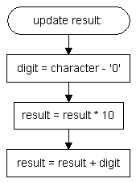

Ascii Coded Decimal strings are, for example, used in the Ymodem protocol for sending file size information. To use that string as a file size it has to be converted to an integer in order to be processed fast and code-efficient.
The conversion is not as straight-forward as others, as the string length has to be taken into account:
'512' has a length of 3 characters, and therefore the '5' means 500, and not 50 or 5. As the most significant digits are usually sent first, the string is not too hard to be converted. If the least significant digit is sent first the string has to be stored first and can't be processed byte for byte.
Given that the most significant digit is sent first, the following steps are necessary for each character received:

For the '512' string, this happens:
'5' is converted to 5 by subtracting ASCII '0' from '5'. Then the result (which is still zero) is multiplied by 10. The result is zero.
Now 5 is added. Result = 5
Now the '1' is received and converted to 1. The result (which is 5) is multiplied by 10, so we now have 50.
1 is added which equals 51.
The '2', being the last character of the string, is again converted, the result is pultiplied by 10 (=510) and 2 is added. The result is 512. Easy huh?
The only thing I didn't mention until now is how to determine when the string ends. This depends on the transmitter or source of the string. If it is a null-terminated string, we can use the following program flow: